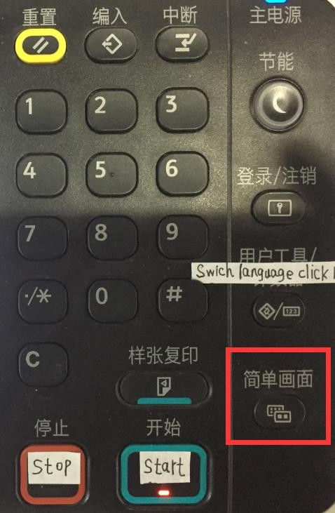
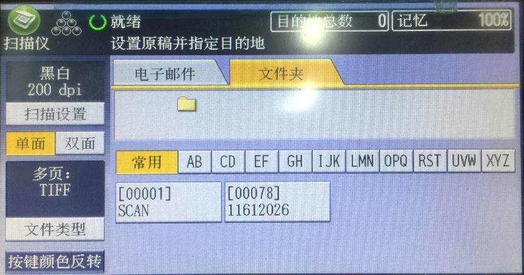
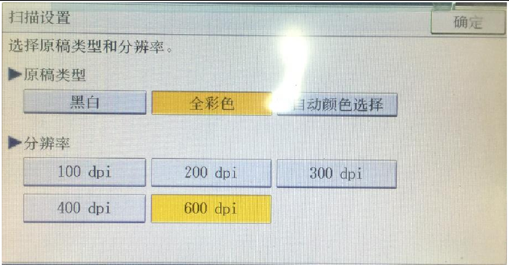
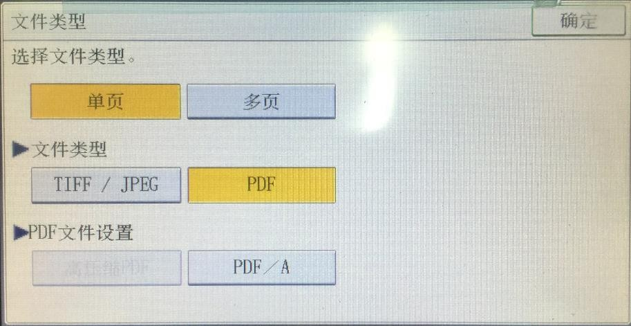
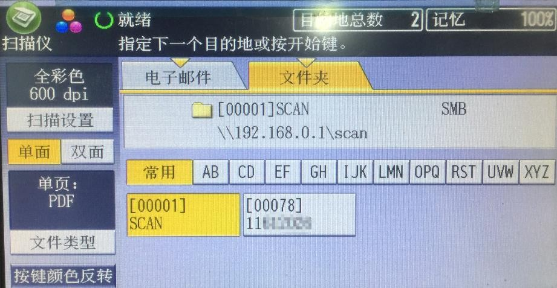
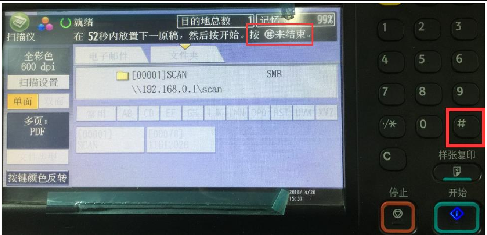

联创 | 扫描
Created by Xinge GUO
操作
- 刷卡
- 点击机器上的
扫描仪，进入扫描界面 如果出来的是这个让人看起来就很绝望想把机器砸了的界面
先冷静一下，点击右边的
简单画面。
然后就会变得很友好了：

清晰度设置
点击左上角的
扫描设置，设置扫描清晰度，一般直接设成最高（600dpi）：
设置文件类型
点击左下角的
文件类型
- 单页：扫描结果会变成每份只有一面内容的 pdf 上传
- 多页：扫描结果会合并成一个多面的 pdf 上传
- 文件类型：根据需要
- PDF 文件设置：有兴趣的可以自行百度，一般用不上，不需要设置
设置文件上传位置

文件夹 → SCAN
文件会保存在你刷的校园卡的联创里，如图：
亦可选择直接发到自己的邮箱中，不过需要先再点击一开始的
简单模式，进入设置界面：选择
手动输入，输入自己的邮箱点击机器上的开始
结束扫描
需先点击
#键，再刷卡退出